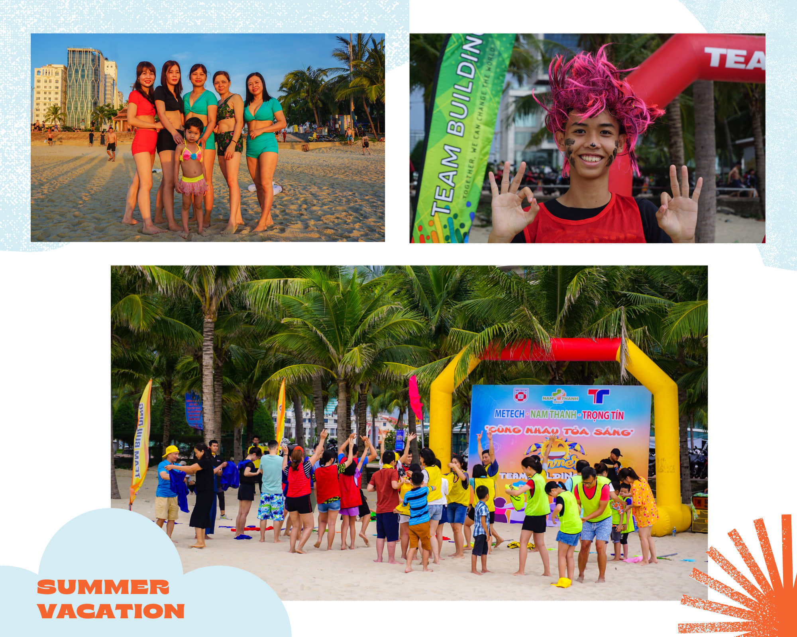

Bờ biển Đà Nẵng có nhiều bãi biển đẹp nằm rải rác, kéo dài từ chân đèo Hải Vân đến Non Nước. Đặc điểm chung của các bãi biển ở Đà Nẵng là sóng nhỏ, nước êm và trong xanh, rất thích hợp để khai thác các hoạt động vui chơi, giải trí. Dọc theo tuyến Phạm Văn Đồng - một trong những cung đường đẹp nhất Đà Nẵng, du khách có thể thấy các bãi biển nối tiếp nhau: biển Mỹ An, biển Mỹ Khê và biển Phạm Văn Đồng.
Trong đó, biển Mỹ Khê liên tục được xướng tên trong danh sách các bãi biển đẹp của châu lục và thế giới. Năm 2006, Forbes (tạp chí kinh tế hàng đầu của Mỹ) bình chọn Mỹ Khê là một trong sáu bãi biển đẹp nhất hành tinh. Mới đây, năm 2021, trang web du lịch hàng đầu thế giới TripAdvisor cũng đã công bố bãi biển Mỹ Khê nằm trong top 25 bãi biển đẹp nhất châu Á.
Các bãi biển dọc đường Phạm Văn Đồng sở hữu những bãi cát dài, trắng mịn, nước trong xanh và sạch sẽ. Du khách đến đây chủ yếu để nghỉ dưỡng, tắm biển, tắm nắng, lướt ván hoặc chơi thể thao, tổ chức teambuilding,... Trải dài theo bờ biển là dãy nhà hàng, khách sạn với đa dạng loại hình dịch vụ và mức giá khác nhau.
Người dân và khách du lịch thỏa sức vui chơi trong mùa du lịch biển 2022
“Tôi đã đến Đà Nẵng một lần và quay lại vì thấy ấn tượng. Tôi thích biển, biển ở đây sóng không to và nước cũng không sâu. Về dịch vụ thì mỗi năm một khác, nhưng nhìn chung năm nay chất lượng dịch vụ tốt” - bà Nguyễn Thị Bình (52 tuổi), du khách từ Hà Nội, chia sẻ.
Khác với ban ngày, các dịch vụ giải trí vào ban đêm ở thành phố vẫn chưa có nhiều ấn tượng. Mặc dù đã triển khai chợ đêm, khu ẩm thực,... nhưng các hoạt động này lại chưa thể hiện được bản sắc văn hóa độc đáo của Đà Nẵng - điều vốn khiến du khách vấn vương khi rời khỏi nơi này. Nhằm thổi hồn cho du lịch đêm của Thành phố, tối 30/04 vừa qua, Đà Nẵng chính thức khai trương khu biển đêm Mỹ An.
Theo đó, biển đêm Mỹ An được phép hoạt động 24/24, cung cấp các dịch vụ ăn uống, giải khát, mua sắm, xem phim, mát xa trị liệu,... Đặc biệt, khu biển đêm Mỹ An kết nối với khu “phố Tây” An Thượng để tạo thành khu liên hợp dịch vụ hấp dẫn, thu hút nhiều du khách, đặc biệt là khách quốc tế.
Ông Đinh Quang Đức - Điều hành Công ty tổ chức du lịch và lữ hành miền Trung Sanna Tour chia sẻ: “Tại công ty CP Sanna Tour chúng tôi ghi nhận, chỉ trong khoảng một tháng hè vừa qua, số lượng đoàn khách đặt tour Đà Nẵng qua công ty dao động khoảng 7-9 đoàn. Các tour được chọn thường bao gồm hoạt động Team Building trên bãi biển. So với 2 năm dịch 2020 và 2021 thì hiện nay số lượng khách đến với Đà Nẵng tăng cao hơn rất nhiều”.
Qua những lần khảo sát cảm nhận của du khách sau khi vui chơi tại các bãi biển Đà Nẵng, ông Đức nhận thấy đa số du khách đều thích thú và xem đây là một hoạt động không thể thiếu khi đến với thành phố. “Có nhiều khách chia sẻ với chúng tôi rằng: ‘Anh chị đến Đà Nẵng du lịch chỉ vì mong được tắm biển Mỹ Khê, ‘Đây là bãi biển cho chị cảm nhận tuyệt vời. Biển rất đẹp, buổi chiều ngắm hoàng hôn cùng ly cafe thật là trải nghiệm thú vị’” - Ông Đức cho biết thêm.
Nhìn từ trên cao bán đảo Sơn Trà dường như tách biệt với khu đồng bằng sầm uất bên trong thành phố Đà Nẵng. Thế nhưng, Sơn Trà không những là bức bình phong chắn gió, giúp cho hoạt động của tàu thuyền được an toàn mà còn là khu bảo tồn thiên nhiên hoang dã của thành phố. Bán đảo Sơn Trà là nơi hội tụ nhiều danh thắng ở thành phố Đà Nẵng như chùa Linh Ứng, Bãi Rạng, Bãi Nam, Bãi Tiên Sa, Bãi Bụt,...
Để có thể đặt chân đến các địa điểm này, du khách phải đi qua những cung đường quanh co uốn cong theo triền núi. Từ đây, du khách sẽ được chiêm ngưỡng toàn cảnh thành phố Đà Nẵng êm đềm bên bờ biển.
Nhằm phát triển du lịch biển ở Sơn Trà, nhiều doanh nghiệp, chủ đầu tư đã tận dụng những bờ biển bằng phẳng, hoang sơ dưới chân bán đảo để triển khai các dịch vụ. Chẳng hạn, tại Bãi Rạng có các dịch vụ cho thuê chòi, thuê lều để cắm trại qua đêm ngoài trời, thuê cano đi lặn ngắm san hô,... Tại Bãi Nam có các dịch vụ vui chơi ngoài trời như picnic, cắm trại, team building,... hay Khu nghỉ dưỡng Tiên Sa tại bãi Tiên Sa. Bán đảo Sơn Trà còn cho phép du khách tích hợp du lịch biển với du lịch sinh thái rừng với đa dạng loài động thực vật và du lịch tâm linh (chùa Linh Ứng - Bãi Bụt).

Bãi rạn Nam Ô còn mang nét nguyên thủy, hoang sơ, chưa được khai thác du lịch một cách triệt để. Đó cũng là lý do khiến bãi rạn trở nên thu hút hơn, đặc biệt đối với những du khách du lịch tự túc.
Bãi rạn Nam Ô nằm phía Tây Bắc thành phố, dài khoảng 300m, rộng chừng 50m, có diện tích 2ha. Bãi là tổ hợp của hàng trăm hòn đá với hình thù và kích thước khác nhau, chưa kể những rặng đá ngầm sâu dưới biển.
Cách bãi rạn khoảng 2km về hướng Đông Nam là làng Nam Ô - làng chài truyền thống 700 năm tuổi. Ngoài du lịch biển ở bãi rạn, du khách còn có thể kết hợp trải nghiệm du lịch văn hóa thông qua các sự tích lâu đời về Làng Nam Ô, tham quan đền thờ Ngư ông hay nếm thử nước mắm Tiến Vua vang danh.
Du khách nên đến bãi rạn Nam Ô vào sáng sớm hoặc xế chiếu để có thể tận hưởng được vẻ xanh mướt của rêu.
Nghị quyết 43-NQ/TW xác định ngành du lịch trở thành ngành kinh tế mũi nhọn với việc đáp ứng 6 tiêu chí đánh giá cơ bản, đồng thời là một trong ba trụ cột kinh tế của Đà Nẵng. Trong đó, loại hình du lịch biển đóng góp một phần không nhỏ đối với sự phát triển bền vững của ngành du lịch nói chung và kinh tế - xã hội của thành phố. Sự đóng góp này được thể hiện bằng sự gia tăng các kết quả tạo ra trong ngành du lịch qua từng thời kỳ.
Dấu hiệu tích cực về sự tăng trưởng du lịch Đà Nẵng 5 tháng đầu năm 2022 là động lực để ban lãnh đạo, những người làm dịch vụ cùng người dân thành phố tiếp tục nâng cấp và đổi mới chất lượng dịch vụ. Nhận thấy thế mạnh và tiềm năng to lớn của biển, các chính sách liên quan đến phát triển dịch vụ du lịch biển luôn được chú trọng hơn hết.
Theo đó, hàng loạt các đề án, chính sách liên quan đến việc khai thác tối ưu các khía cạnh của du lịch biển đã được chính quyền thành phố lên kế hoạch xúc tiến như: đề án “Phát triển du lịch cộng đồng tại bãi biển Thọ Quang - Mân Thái”, “Phát triển du lịch cộng đồng Nam Ô”, dự án khu du lịch nghỉ dưỡng và tổng hợp Làng Vân.
Bên cạnh đó, ban quản lý bán đảo Sơn Trà và các bãi biển du lịch Đà Nẵng đang tiếp tục khảo sát, đánh giá tiềm năng du lịch sinh thái tại các bãi quanh bán đảo Sơn Trà và tiến hành quy hoạch các điểm du lịch tự phát.
Đặc biệt, từ ngày 11/6 đến 15/8, thành phố khởi động chuỗi chương trình Lễ hội “Tận hưởng Mùa hè Đà Nẵng - Enjoy Danang Summer Festival 2022”. Trong chương trình có chuỗi hoạt động “Tận hưởng Biển Đà Nẵng” với nhiều chương trình đặc sắc: Nghệ thuật sắp đặt bãi biển; Lễ hội Việt Nam - Nhật Bản; Chương trình giao lưu văn hóa, nghệ thuật Việt Nam – Nhật Bản; Vũ hội đường phố - khu phố đêm An Thượng; bãi biển đêm Mỹ An, tổ hợp vui chơi giải trí DanaBeach. Với chuỗi hoạt động đặc sắc như trên, du lịch biển Đà Nẵng hứa hẹn sẽ trở thành tâm điểm sôi động thu hút du khách trong nước và quốc tế trong mùa hè này.
Số lượng lớn các hoạt động ngoài trời bùng nổ vào dịp hè.
Bên cạnh việc nâng cấp sản phẩm du lịch đặc thù, Đà Nẵng cũng tập trung đầu tư phát triển, hoàn thiện hệ thống cơ sở hạ tầng và giao thông. Ngay khi vừa công bố hết dịch, hàng loạt các dự án xây dựng khách sạn 7 sao, chung cư cao cấp sang trọng, biệt thự, khu nghỉ dưỡng đã chính thức khởi động trở lại. Đặc biệt, tuyến vận tải hành khách đường thủy nội địa đi hòn Sụp - bãi Nam - bãi Đa và tàu cao tốc vận tải hành khách đường thủy Đà Nẵng - Lý Sơn cũng đi vào hoạt động, tạo cơ hội phát triển du lịch liên vùng. Các đường bay trực tiếp trong nước và quốc tế cũng ngày càng được mở rộng. Qua đó, Đà Nẵng có thể tận dụng vị thế của mình để tổ chức nhiều sự kiện văn hóa - thể thao - du lịch nhằm thu hút du khách quốc tế.
Song song với chính sách, đề án của Ban quản lý, những người làm dịch vụ cũng đã chủ động tìm kiếm giải pháp nhằm cải thiện chất lượng dịch vụ và làm hài lòng du khách. Đây cũng là một quá trình lâu dài và bền bỉ, đặc biệt là sau khi du lịch biển Đà Nẵng bị đóng băng do dịch covid-19.
Ông Nguyễn Minh Châu (44 tuổi), người cho thuê ghế ở bãi biển Mỹ Khê từ năm 1997, chia sẻ: “Trước kia thì chúng tôi kinh doanh riêng, nhưng chính quyền sợ các quán tranh giành khách gây mất trật tự nên đã đưa ra chính sách gộp 6 quán lại thành 1 để bán chung với nhau. Về giá cả thì đều đã được niêm yết ở bảng hiệu để tránh tình trạng chặt chém khách. Chúng tôi cũng không tăng giá thuê ghế khi thành phố cho phép du lịch trở lại sau đại dịch”. Nhờ chính sách này, an ninh trật tự tại các bãi biển trên địa bàn thành phố được đảm bảo, giúp du khách an tâm hơn khi vui chơi.
Ngoài niêm yết giá, một số khu nghỉ dưỡng đã chủ động giảm giá dịch vụ ở mức phần trăm nhất định. Chị Chung Bảo Phụng, trưởng bộ phận lễ tân tại khu nghỉ dưỡng Tiên Sa cho biết, để kích cầu du khách, khu nghỉ dưỡng đã giảm giá vé từ 30.000 xuống còn 10.000/người, đồng thời giá các dịch vụ khác như ăn uống, lưu trú, giải trí,... cũng không tăng mặc dù giá cả thị trường có sự leo thang. Theo ghi nhận, trung bình mỗi ngày, Tiên Sa bán được 200-300 vé, chủ yếu là vào các ngày cuối tuần.

Hình thức khuyến mãi cũng được một số đơn vị kinh doanh dịch vụ biển áp dụng nhằm thu hút khách. Huỳnh Huy Hoàng (sinh năm 1997), hướng dẫn viên Team-building tại Bãi Nam (Sơn Trà) bày tỏ: “Các hoạt động vui chơi gồm có bóng chuyền biển, chèo SUP, chạy cano hoặc tiệc nướng, ca hát tại các lều trại. Hiện tại, giá các gói vui chơi vẫn không giảm nhưng chúng tôi hỗ trợ du khách bằng cách tặng thêm các dịch vụ khác theo quy định. Ví dụ như đội đăng ký từ 20 người trở lên sẽ được tặng thêm lửa trại, đội 15 người sẽ được miễn phí loa hay tặng thêm ván chèo SUP,...”
Ngành du lịch Đà Nẵng đang trên đà phục hồi từ những chuyển biến tích cực của du lịch biển hậu Covid-19. Trên chặng đường phát triển của mình, du lịch biển Đà Nẵng ngày càng thể hiện là loại hình du lịch triển vọng, góp phần chuyển dịch cơ cấu kinh tế, quảng bá hình ảnh cho thành phố.